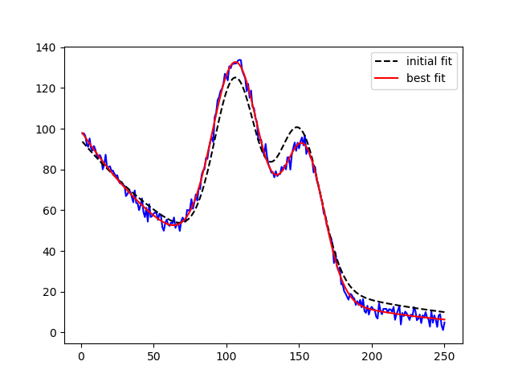

Note
Click here to download the full example code
doc_builtinmodels_nistgauss2.py¶
Out:
[[Model]]
((Model(gaussian, prefix='g1_') + Model(gaussian, prefix='g2_')) + Model(exponential, prefix='exp_'))
[[Fit Statistics]]
# fitting method = leastsq
# function evals = 37
# data points = 250
# variables = 8
chi-square = 1247.52821
reduced chi-square = 5.15507524
Akaike info crit = 417.864631
Bayesian info crit = 446.036318
[[Variables]]
exp_amplitude: 99.0183270 +/- 0.53748905 (0.54%) (init = 94.53724)
exp_decay: 90.9508890 +/- 1.10310483 (1.21%) (init = 111.1985)
g1_amplitude: 4257.77343 +/- 42.3836427 (1.00%) (init = 3189.648)
g1_center: 107.030956 +/- 0.15006873 (0.14%) (init = 106.5)
g1_sigma: 16.6725765 +/- 0.16048227 (0.96%) (init = 14.5)
g1_fwhm: 39.2609166 +/- 0.37790686 (0.96%) == '2.3548200*g1_sigma'
g1_height: 101.880230 +/- 0.59217232 (0.58%) == '0.3989423*g1_amplitude/max(2.220446049250313e-16, g1_sigma)'
g2_amplitude: 2493.41733 +/- 36.1696902 (1.45%) (init = 2818.337)
g2_center: 153.270101 +/- 0.19466905 (0.13%) (init = 150)
g2_sigma: 13.8069461 +/- 0.18679534 (1.35%) (init = 15)
g2_fwhm: 32.5128728 +/- 0.43986939 (1.35%) == '2.3548200*g2_sigma'
g2_height: 72.0455948 +/- 0.61722328 (0.86%) == '0.3989423*g2_amplitude/max(2.220446049250313e-16, g2_sigma)'
[[Correlations]] (unreported correlations are < 0.500)
C(g1_amplitude, g1_sigma) = 0.824
C(g2_amplitude, g2_sigma) = 0.815
C(exp_amplitude, exp_decay) = -0.695
C(g1_sigma, g2_center) = 0.684
C(g1_center, g2_amplitude) = -0.669
C(g1_center, g2_sigma) = -0.652
C(g1_amplitude, g2_center) = 0.648
C(g1_center, g2_center) = 0.621
C(g1_center, g1_sigma) = 0.507
C(exp_decay, g1_amplitude) = -0.507
##
import warnings
warnings.filterwarnings("ignore")
##
# <examples/doc_nistgauss2.py>
import matplotlib.pyplot as plt
import numpy as np
from lmfit.models import ExponentialModel, GaussianModel
dat = np.loadtxt('NIST_Gauss2.dat')
x = dat[:, 1]
y = dat[:, 0]
exp_mod = ExponentialModel(prefix='exp_')
gauss1 = GaussianModel(prefix='g1_')
gauss2 = GaussianModel(prefix='g2_')
def index_of(arrval, value):
"""return index of array *at or below* value """
if value < min(arrval):
return 0
return max(np.where(arrval <= value)[0])
ix1 = index_of(x, 75)
ix2 = index_of(x, 135)
ix3 = index_of(x, 175)
pars1 = exp_mod.guess(y[:ix1], x=x[:ix1])
pars2 = gauss1.guess(y[ix1:ix2], x=x[ix1:ix2])
pars3 = gauss2.guess(y[ix2:ix3], x=x[ix2:ix3])
pars = pars1 + pars2 + pars3
mod = gauss1 + gauss2 + exp_mod
out = mod.fit(y, pars, x=x)
print(out.fit_report(min_correl=0.5))
plt.plot(x, y, 'b')
plt.plot(x, out.init_fit, 'k--', label='initial fit')
plt.plot(x, out.best_fit, 'r-', label='best fit')
plt.legend(loc='best')
plt.show()
# <end examples/doc_nistgauss2.py>
Total running time of the script: ( 0 minutes 0.161 seconds)